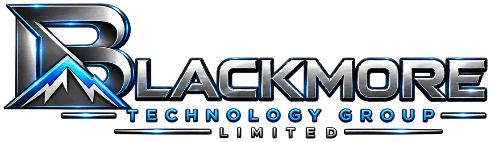

CONTENT CHIP

BLACKMORE DESIGN SYSTEM / VERSION 1.0
Blackmore Aurora
One recognizable engineering identity. Every interface, every capability, every platform.
ENTITY · ENTITY Wallet · Blackmore Nexus (proposed global name for BTG Command Centre) · Public developer ecosystem.
Designed for verifiability, precision and human control
Palette as infrastructure
Shared tokens, consistent semantics.
A first-party, offline-compatible token language spans Qt-native desktop applications, the Command Centre Tk workspace and public web interfaces. Styling does not replace trusted permissions or engineering qualification.
Component blueprint
Composable systems deserve a composable interface.
Typed DataChip assembly — illustrative visual contract
AI CAPABILITY
NIKI inference
Approved host · bounded computeEVIDENCE
Typed result
Trace · validation · provenanceAUTHORITY
Rights Passport
Independent permissionsThe illustration explains the visual grammar; it is not a live executable workflow or a claim of completed production authorization.
Product family
One identity across four products.
ENTITY
Data and capability composition, lineage, evidence, sovereign information and native development tools.
ENTITY Wallet
Capability library, governed rights, asset custody, exchange, settlement and treasury views with financial state clearly distinguished.
Blackmore Nexus
Proposed global identity for BTG's device engineering, diagnostics, DataChip hosting and controlled support platform. Existing technical identifiers remain unchanged.
ENTITY developer portal
The same typography, semantics and accessibility rules in the public documentation and product experience.
Engineering and release boundary: Aurora is a design system, not a new ENTITY protocol revision. Styling cannot promote unverified rights, grant issuer authority, settle a financial obligation, deploy an unsigned component or certify a native mobile build.